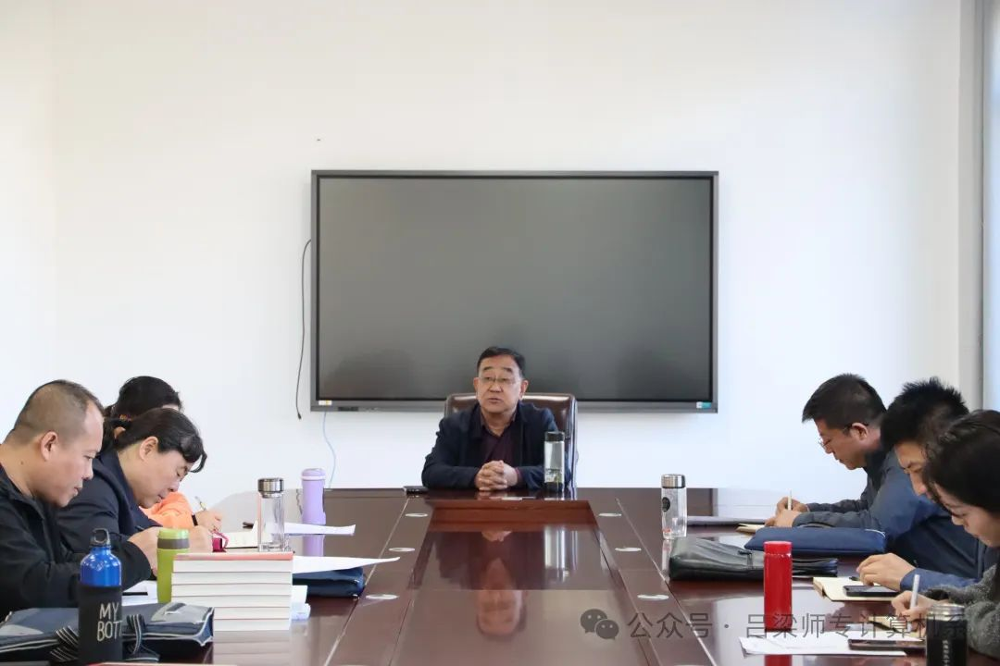

赋能成长，蓄势前行 ——吕梁师范高等专科学校计算机系召开教研会
4月23日下午，吕梁师范高等专科学校计算机系在12号楼215会议室召开了教育教研工作会议，吕梁师范高等专科学校校长马林出席会议并讲话、计算机系主任秦瑞峰主持会议，计算机系所有教师参会。（详细……）
会上，马校长充分肯定了计算机系全体教职工的努力与付出，也对系部专业发展面临的困境以及教职工面临的压力表示深深理解。他指出，有压力就要正视压力，将压力转化为动力，主动作为，积极向优秀院校学习宝贵经验，在专业建设和人才培养方面大胆探索和尝试。
